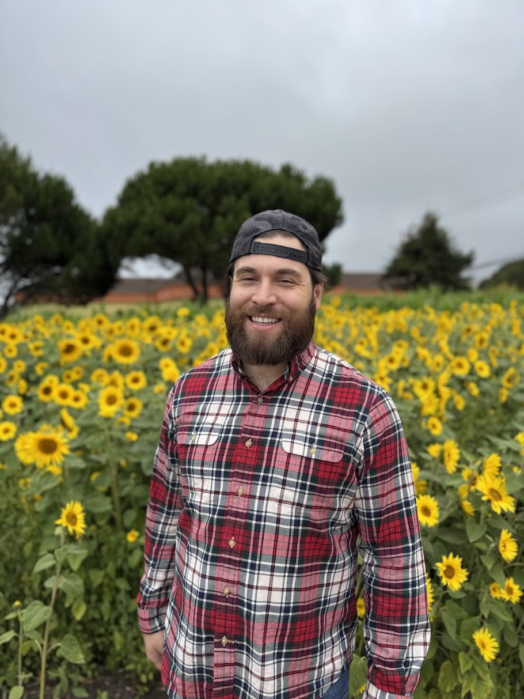

San Jose, California
Service Operations & Customer Experience
Among the first on Tesla's Robotaxi team — and the first Operations Advisor in the program — helping define what great autonomous vehicle service looks like as the fleet expands nationwide.
I've spent more than a decade making service operations excellent — in dealerships, at a mobile-mechanic startup, and across Tesla's service network. My work lives where customer experience meets operational rigor: keeping fleets moving, resolving issues before they escalate, and building the workflows that let teams scale.
Today I'm Tesla's first Robotaxi Operations Advisor — a role I helped define from scratch. Beyond keeping the Bay Area fleet running, I'm helping shape how the program scales: partnering with teams in Texas, Florida, and Las Vegas to train advisors and build the operational playbook for each new market. Recently certified in Artificial Intelligence, I'm focused on where autonomy and human-centered service meet.